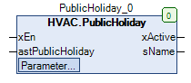
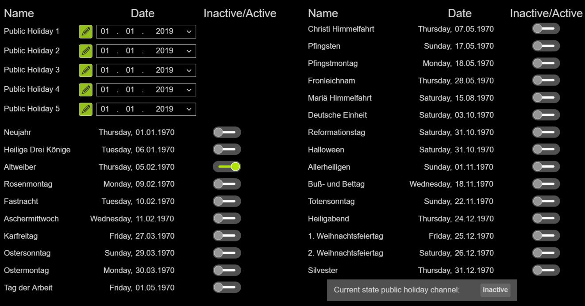

PublicHoliday (FB)¶
FUNCTION_BLOCK PublicHoliday
Short Description¶
Display of the status of public holidaysTypical application: Detection of holidays in a clock system
Portrayal¶

Interfaces¶
Inputs¶
Name Datatype
Range
Init-Value
Functional Description
xEn BOOL Enable / Disable function ( FALSE = Disable, TRUE = Enable )
astPublicHoliday ARRAY[0..29] OF HVACTYPES.stPublicHoliday Transfer of defined public holidays with name, date and release status
Outputs¶
Name Datatype
Range
Init-Value
Functional Description
xActive BOOL Display - Status - Holidays ( FALSE = not active, TRUE = active )
sName STRING(30) Name of the active holiday
Setpoints / Parameters¶
Name Datatype
Range
Init-Value
Functional Description
eCountry eCountryList eCountryList.UserDefined, eCountryList.DE eCountryList.DE Selection of country-specific public holidays
Functional Description¶
General¶
Visualization¶
Suitable visualization element from the HVACV Visu Library: PublicHoliday
Portrayal¶

Interfaces Visu-Element¶
Name Datatype
Type
Init-Value
Functional Description
FB_PublicHoliday PublicHoliday VAR_IN_OUT Enter FB PublicHoliday here Example PRG.PublicHoliday
BMS_Active BOOL VAR_INPUT BMS (Building Management System) GLT (Building Management System). If BMS_Active = TRUE the input/editing of the clocks is deactivated because they can only be set via the BMS. Times can then only be viewed.
DisableInput BOOL VAR_INPUT Disable Input = TRUE Times of the weekly clocks can only be viewed and not edited - BMS (Building Management System) GLT (Gebäudeleittechnik). If BMS_Active = TRUE the input/editing of the clocks is deactivated because they can only be set via the BMS. Times can then only be viewed.
Codesys¶
- InOut:
Scope Name Type Initial Comment Input xEn BOOL TRUE Enable / Disable function ( FALSE = Disable, TRUE = Enable )
astPublicHoliday ARRAY [0..29] OF HVACTYPES.stPublicHoliday [STRUCT(sName := ‘00’, datDate := DATE#1970-1-1, xEnable := FALSE), STRUCT(sName := ‘01’, datDate := DATE#1970-1-1, xEnable := FALSE), STRUCT(sName := ‘02’, datDate := DATE#1970-1-1, xEnable := FALSE), STRUCT(sName := ‘03’, datDate := DATE#1970-1-1, xEnable := FALSE), STRUCT(sName := ‘04’, datDate := DATE#1970-1-1, xEnable := FALSE), STRUCT(sName := ‘05’, datDate := DATE#1970-1-1, xEnable := FALSE), STRUCT(sName := ‘06’, datDate := DATE#1970-1-1, xEnable := FALSE), STRUCT(sName := ‘07’, datDate := DATE#1970-1-1, xEnable := FALSE), STRUCT(sName := ‘08’, datDate := DATE#1970-1-1, xEnable := FALSE), STRUCT(sName := ‘09’, datDate := DATE#1970-1-1, xEnable := FALSE), STRUCT(sName := ‘10’, datDate := DATE#1970-1-1, xEnable := FALSE), STRUCT(sName := ‘11’, datDate := DATE#1970-1-1, xEnable := FALSE), STRUCT(sName := ‘12’, datDate := DATE#1970-1-1, xEnable := FALSE), STRUCT(sName := ‘13’, datDate := DATE#1970-1-1, xEnable := FALSE), STRUCT(sName := ‘14’, datDate := DATE#1970-1-1, xEnable := FALSE), STRUCT(sName := ‘15’, datDate := DATE#1970-1-1, xEnable := FALSE), STRUCT(sName := ‘16’, datDate := DATE#1970-1-1, xEnable := FALSE), STRUCT(sName := ‘17’, datDate := DATE#1970-1-1, xEnable := FALSE), STRUCT(sName := ‘18’, datDate := DATE#1970-1-1, xEnable := FALSE), STRUCT(sName := ‘19’, datDate := DATE#1970-1-1, xEnable := FALSE), STRUCT(sName := ‘20’, datDate := DATE#1970-1-1, xEnable := FALSE), STRUCT(sName := ‘21’, datDate := DATE#1970-1-1, xEnable := FALSE), STRUCT(sName := ‘22’, datDate := DATE#1970-1-1, xEnable := FALSE), STRUCT(sName := ‘23’, datDate := DATE#1970-1-1, xEnable := FALSE), STRUCT(sName := ‘24’, datDate := DATE#1970-1-1, xEnable := FALSE), STRUCT(sName := ‘Public Holiday 1’, datDate := DATE#2019-1-1, xEnable := TRUE), STRUCT(sName := ‘Public Holiday 2’, datDate := DATE#2019-1-1, xEnable := TRUE), STRUCT(sName := ‘Public Holiday 3’, datDate := DATE#2019-1-1, xEnable := TRUE), STRUCT(sName := ‘Public Holiday 4’, datDate := DATE#2019-1-1, xEnable := TRUE), STRUCT(sName := ‘Public Holiday 5’, datDate := DATE#2019-1-1, xEnable := TRUE)] Transfer of defined public holidays with name, date and release status
eCountry eCountryList eCountryList.DE Selection of country-specific public holidays
Output xActive BOOL Display - Status - Holidays ( FALSE = not active, TRUE = active )
sName STRING(30) Name of the active holiday